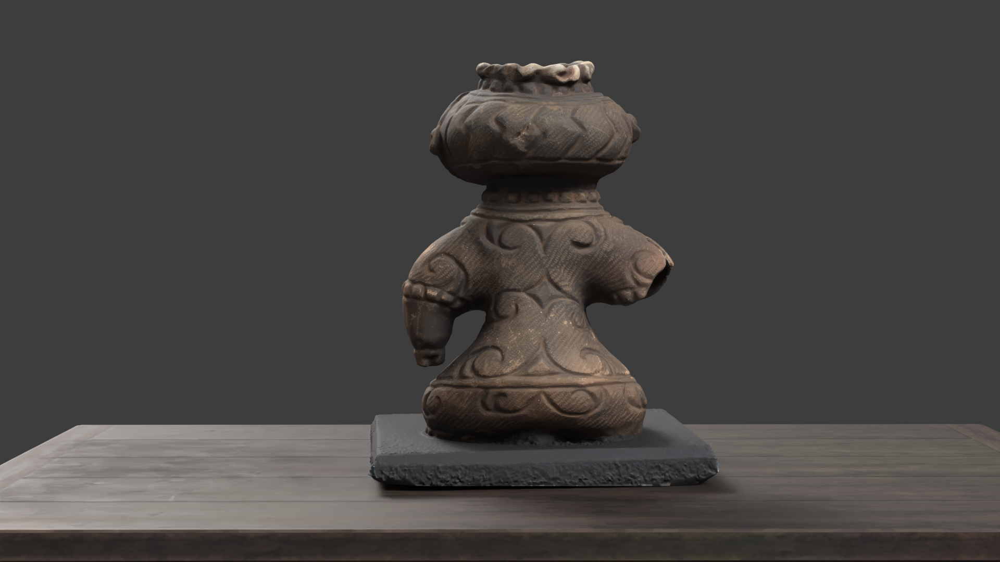
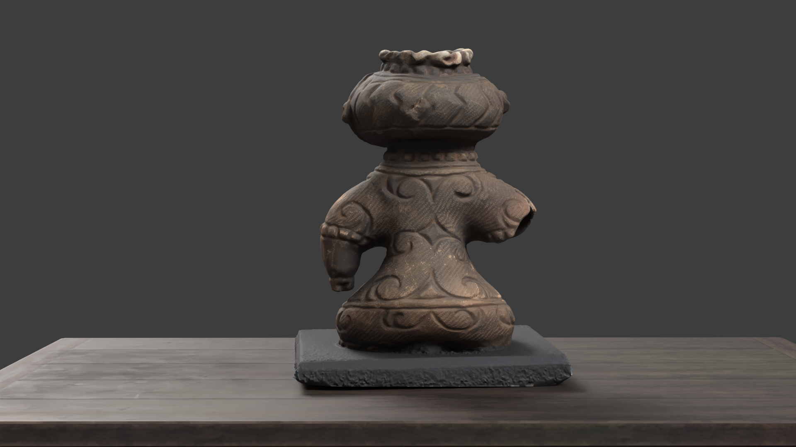
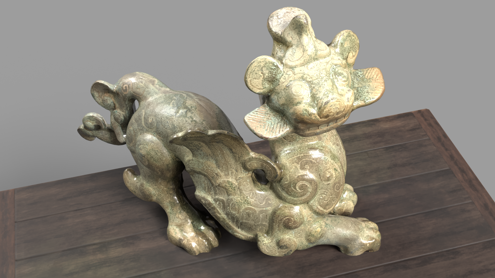
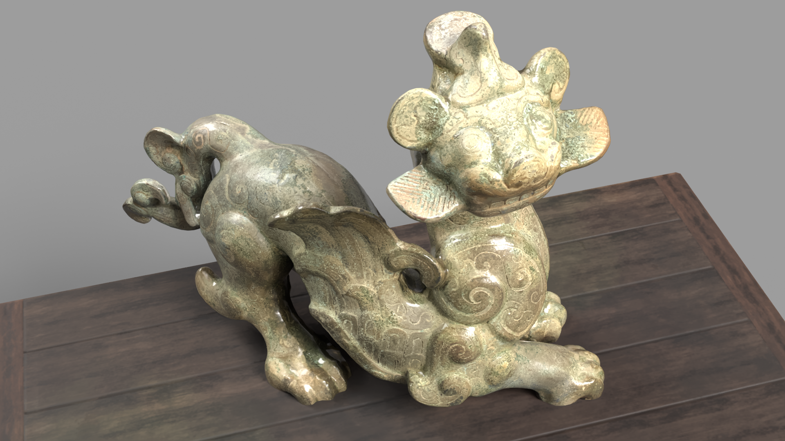

Mythical Creatures Museum
Asian Statue Mythical Creatures Museum
Welcome to a unique digital journey where ancient myths meet modern technology. Our museum invites you to explore the cultural and historical significance behind each statue, bringing ancient beliefs, societal values, and artistic intentions to life.
Each masterpiece in our collection is accompanied by interactive details that reveal:
- Rich mythology and symbolism
- Traditional craftsmanship techniques
- Cultural context and significance
Experience our collection through immersive 3D models, allowing you to examine each statue in detail from every angle. These models are available for download, enabling you to bring a piece of ancient Asian mythology into your digital space.

 

Shakōki or Goggle-eyed
The "shakōki" or "goggle-eyed" is a mythical creature from Japanese folklore, known for its distinctive large, protruding eyes. These creatures are often depicted as guardians or protectors, keeping a watchful eye over their domain.
Shiva Nataraja
Shiva Nataraja is an iconic representation of the Hindu deity Shiva in his aspect as the lord of dance. The sculpture depicts Shiva performing the Tandava, a cosmic dance that represents the cycle of creation, preservation, and destruction.

 

Winged Dragon
The winged dragon is a mythical creature found in various cultures around the world. These majestic beasts are often associated with power, wisdom, and the elements of air and fire. They are revered for their strength, grace, and the ability to soar through the skies.


Shoki
Shōki is a demon-quelling deity from Chinese and Japanese folklore. Depicted as a powerful warrior, Shōki is believed to have the ability to vanquish evil spirits and protect people from harm. This 3D model captures the fierce and determined expression of this legendary figure.